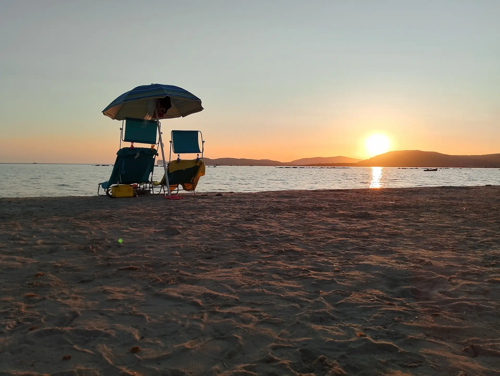
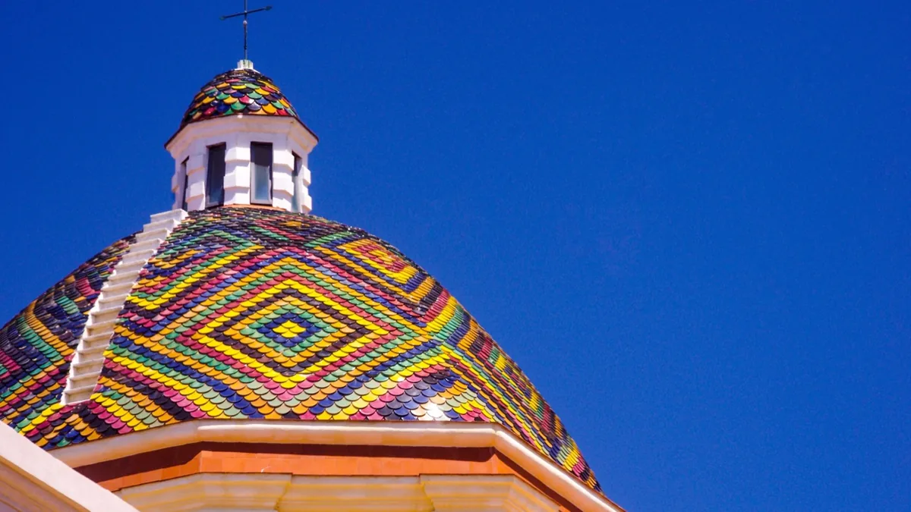
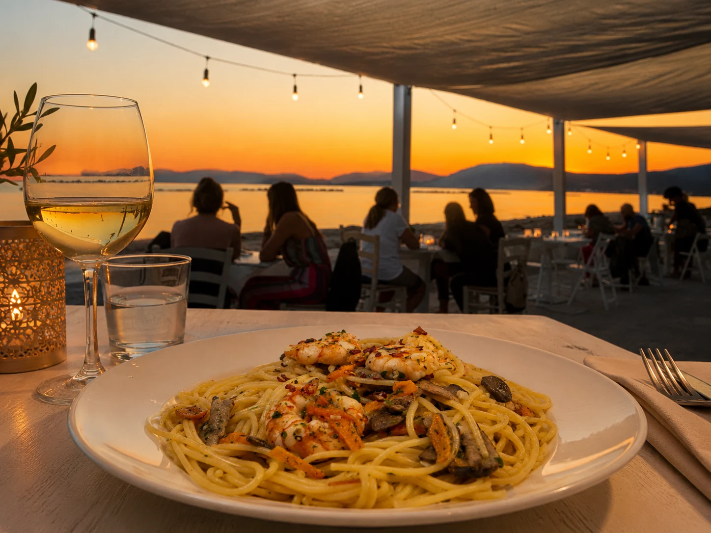
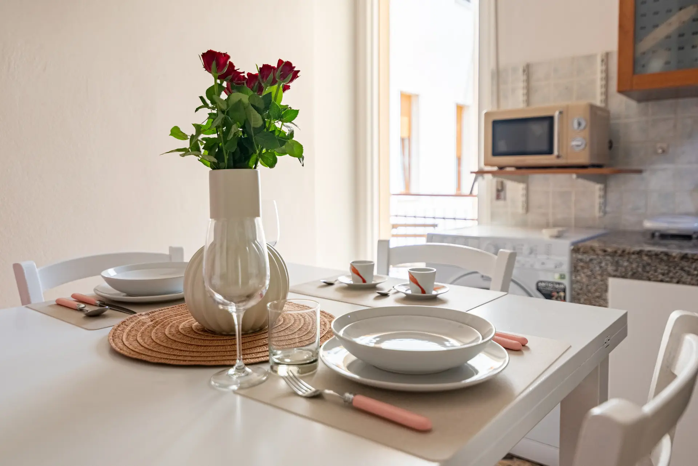
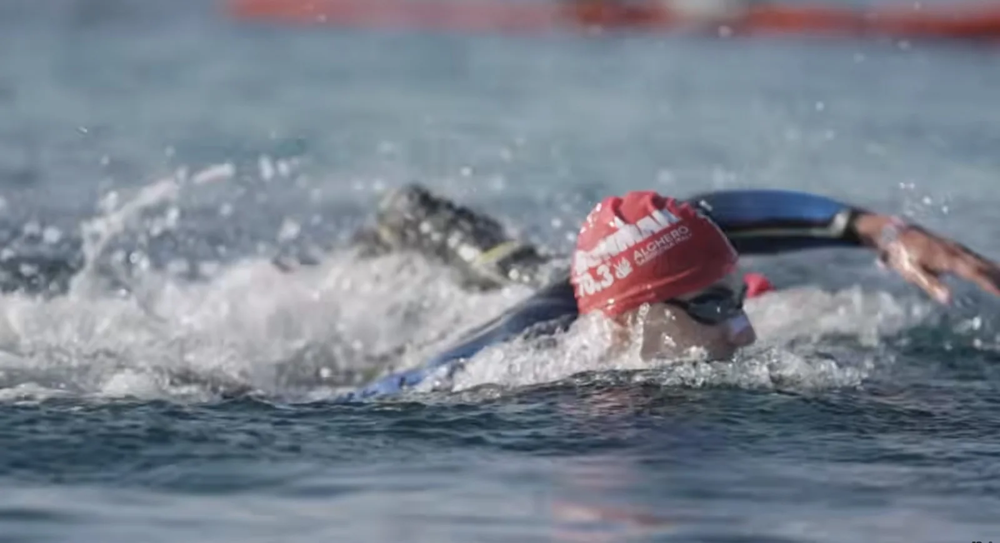

Najkrajšie pláže v Alghere
Praktický sprievodca na plánovanie pobytu medzi plážami blízko centra, panoramatickejšími zátokami a pokojnejšími miestami v prírode.
Alghero a jeho more
Ak hľadáte informácie o tom, ktoré pláže v Alghere sú najkrajšie a chcete vedieť, kam ísť k moru, tento sprievodca vám pomôže vybrať si podľa vzdialenosti, pohodlia, atmosféry a typu dovolenky, akú si prajete.
Pláže v Alghere sa medzi sebou výrazne líšia: niektoré sú ideálne pre tých, ktorí chcú zostať blízko centra, zatiaľ čo iné sú vhodnejšie pre návštevníkov, ktorí hľadajú širšie výhľady, priezračnú vodu a prirodzenejšie prostredie. Poznať tieto rozdiely vám pomôže lepšie si naplánovať každý deň a vybrať si pláž, ktorá vám bude najviac vyhovovať.
- Pláže blízko centra: Lido, Maria Pia
- Scénickejšie pláže: Le Bombarde, Lazzaretto
- Pláže v prírode: Mugoni, Porto Ferro

Alghero je jednou z najobľúbenejších destinácií na Sardínii vďaka svojim plážam, priezračnému moru a panorámam Riviera del Corallo. Ak sa ubytujete vo Venerdì House, môžete sa ľahko dostať k moru a naplánovať si oddychové dni medzi piesočnatými plážami, malými zátokami a veľmi pôsobivými prírodnými scenériami.
Ak hľadáte dovolenkový apartmán v Alghere blízko mora, lepšia znalosť pláží v okolí vám pomôže jednoduchšie si naplánovať dovolenku a lepšie si vybrať medzi oddychom, výletmi a dňami strávenými pri vode.
Lido di Alghero
Lido di Alghero je jednou z najpohodlnejších pláží pre tých, ktorí bývajú v meste. Je ideálna pre rodiny, páry a pre tých, ktorí sa chcú k moru dostať ľahko, dokonca aj pešo. Piesok je svetlý, morské dno je pomerne plytké a poloha je perfektná na spojenie pláže s prechádzkami po promenáde.
Maria Pia
Pláž Maria Pia patrí medzi najobľúbenejšie v Alghere vďaka svetlému jemnému piesku, plytkej priezračnej vode a krásnemu borovicovému lesu, ktorý poskytuje tieň počas najteplejších hodín dňa. Duny a stredomorská vegetácia z nej robia výbornú voľbu pre tých, ktorí hľadajú širokú, svetlú a príjemnú pláž na dlhý pobyt pri mori.
Le Bombarde
Le Bombarde je jednou z najznámejších pláží pobrežia Alghero. Nájdete tu zlatistý jemný piesok, veľmi čisté more a prostredie vhodné pre rodiny aj pre tých, ktorí radi šnorchlujú. Plážové služby, bary a reštaurácie z nej robia ideálne miesto na deň pri mori na jednej z najpôsobivejších pláží Riviera del Corallo.
Lazzaretto
Kúsok od Le Bombarde sa nachádza Lazzaretto, oblasť veľmi oceňovaná pre svoju krajinu a malé zátoky. Je to ideálne miesto pre tých, ktorí hľadajú krištáľovo čistú vodu, tyrkysové more a o niečo pokojnejšiu atmosféru než na väčších a rušnejších plážach, s dobrým vyvážením medzi službami, voľným priestorom a prírodou.
Mugoni
Pláž Mugoni je ideálna pre tých, ktorí milujú more obklopené prírodou. Chránený záliv, jemný piesok, pokojné more a borovicový les siahajúci takmer k pláži vytvárajú veľmi uvoľnené prostredie aj pri západe slnka. Je to jedna z najlepších pláží pre tých, ktorí hľadajú pokoj, prirodzený tieň a deň pri mori v pomalšom rytme.
Porto Ferro
Porto Ferro je divokejšia a prirodzenejšia pláž, obľúbená medzi tými, ktorí uprednostňujú otvorenejšie výhľady, menej mestský charakter prostredia a autentickejšie pobrežie. Červené pieskovcové útesy, aragónske veže a živšie more z nej robia veľmi zaujímavé miesto aj pre milovníkov prechádzok, surfovania a výraznejšej pobrežnej scenérie.
Ktorú pláž si vybrať v Alghere?
Ak hľadáte pohodlie a blízkosť mesta, Lido a Maria Pia patria medzi najlepšie možnosti, najmä pre rodiny a pre tých, ktorí sa chcú presúvať bez väčšej námahy. Ak naopak chcete pôsobivejšie more a intenzívne farby, Le Bombarde a Lazzaretto patria medzi najznámejšie pláže. Pre pokojnejšiu, priestrannejšiu a prirodzenejšiu atmosféru sú Mugoni a Porto Ferro dve výborné alternatívy.
Výber správnej pláže závisí aj od typu dovolenky, ktorú chcete zažiť: pohodlné dni blízko centra, panoramatickejšie výlety alebo pokojnejšie miesta na oddych v pomalšom tempe. Práve preto môže pobyt v praktickej časti Alghera urobiť celú dovolenku výrazne jednoduchšou.
Ďalšie pláže v okolí Alghera
Ak chcete objavovať aj širšie okolie, počas dovolenky stoja za zváženie aj ďalšie pláže. Spiaggia della Speranza južne od Alghera je obľúbená pre pokojnejšiu atmosféru a otvorené výhľady na pobrežie. Argentiera má osobitý šarm vďaka bývalej baníckej krajine a divokejšiemu pobrežiu.
Zaujímavou voľbou sú aj Le Saline, ideálne pre tých, ktorí majú radi veľké priestory a menej ľudí, a La Pelosa v Stintine, jedna z najslávnejších pláží Sardínie, známa svetlým pieskom a takmer karibskými farbami mora. Sú to dobré tipy na jednodňový výlet, ak chcete spojiť pláže Alghera s ďalšími pôsobivými úsekmi severozápadného pobrežia.
Kde sa ubytovať pri návšteve pláží v Alghere
Výber dobre situovaného ubytovania robí dovolenku jednoduchšou a príjemnejšou. Venerdì House je dovolenkový apartmán v Alghere navrhnutý pre tých, ktorí chcú mať ľahký prístup k moru, užívať si mesto a bývať v pohodlnom apartmáne blízko hlavných atrakcií.
Ubytovanie v Alghere vám umožní kombinovať dni na pláži, prechádzky po promenáde a večery v historickom centre, pričom máte slobodu vybrať si každý deň inú pláž podľa počasia, nálady a typu oddychu, ktorý hľadáte.
Ak chcete striedať pláž a historické centrum, môžete si prečítať aj nášho sprievodcu o tom, čo vidieť v Alghere.
Objavte aj

Čo vidieť v Alghere
Praktický sprievodca po Alghere medzi historickým centrom, múzeami, archeológiou a prírodou, aj na 1 alebo 2 dni.
Zistiť viac
Kde sa najesť v Alghere
Reštaurácie a praktické tipy od Venerdì House na večere, rýchle obedy a príjemné večery v Alghere.
Zistiť viac
Galéria Venerdì House
Objavte izby, obývaciu časť, kuchyňu, kúpeľňu a detaily apartmánu vo fotogalérii Venerdì House.
Zistiť viac
IRONMAN 70.3 Alghero 2027
Dátum, trať a praktické tipy pre športovcov a sprievod, ktorí plánujú pobyt v Alghere.
Zistiť viac